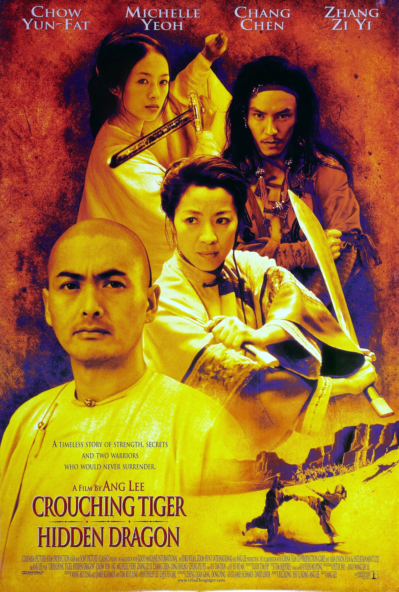
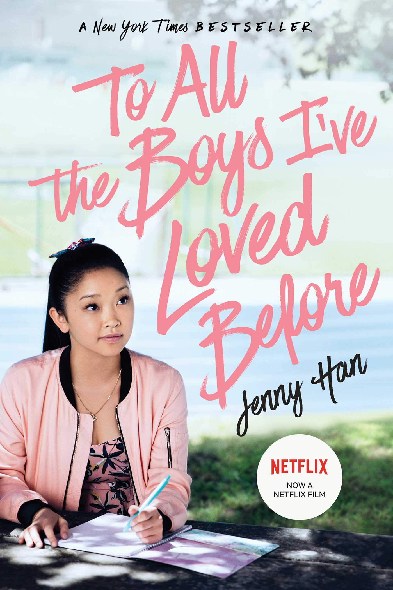

Released in 1943 at the height of the war, the film depicts Japanese people as inherently evil. There is an added scene involving sabotage by Japanese-Americans in Hawaii prior to Pearl Harbor, though the sabotage never happened in reality.
Released in 1943 at the height of the war, the film depicts Japanese people as inherently evil. There is an added scene involving sabotage by Japanese-Americans in Hawaii prior to Pearl Harbor, though the sabotage never happened in reality.
Dragon Seed (1944)

Katharine Hepburn plays a Chinese woman named, Jade, who has her village invaded. Hepburn is shown throughout the movie in yellowface.
Love is a Many-Splendored Thing (1955)
Tells the story of the character Han Suyin, played by Jennifer Jones who is shown in yellowface throughout the course of the film.
The King and I (1956)
A 20th Century Fox musical film starring Yul Brunner (who is described as the “Exotic leading man of American films”) as King Mongkut of Siam. The film is banned in Thailand for its inaccurate portrayal of the royal family.
The Bridge on the River Kwai (1957)

A 1957 prisoner-of-war story that contrasts the lives of American people and Western culture during a war to the lives of Japanese people. The film depicts American culture as civilized and Japanese culture as barbaric.
Flower Drum Song (1961)

The Rodgers and Hammerstein film was made in 1961 and was the first Hollywood film with Asian American actors cast in the roles of the romantic leads.
7 Faces of Dr. Lao (1964)

The Aristocats (1970)

The Disney animated film released in 1970 revolves around a family of aristocratic cats. The film features a Siamese cat, Shun Gon, who is depicted in a stereotypical manner.
Sixteen Candles (1984)

A 1984 coming-of-age comedy film that features an Asian exchange student, Long Duk Dong, played by actor Gedde Watanabe. The film has been called “the worst depiction of an Asian character by an Asian actor.”
Eat a Bowl of Tea (1989)

A romantic story of Chinese-American immigrants living in New York's Chinatown in the late 1940s. Written, directed, and acted by Chinese-American immigrants.
Wedding Banquet = Xi Yan (1993)

A romantic comedy film in both Mandarin and English, directed by Ang Lee
Dragon: The Bruce Lee Story (1998)

A biopic of the martial arts star, Bruce Lee, and his rise to success and fame, starring actor Jason Scott Lee of Hawaiian and Chinese descent.
Crouching Tiger, Hidden Dragon (2000)

A young Chinese warrior steals a sword from a famed swordsman and then escapes into a world of romantic adventure with a mysterious man on the frontier of the nation.
Crazy Rich Asians (2018)

First Hollywood movie with an all-Asian cast in 25 years and has been noted as the biggest romantic comedy in 10 Years. (U.S. Box Office: $172M).
To All The Boys I’ve Loved Before (2018)

A Netflix original teen rom-com that cast an Asian female in its lead role.
Always Be My Maybe (2019)

Another Rom-com with Asian leads.